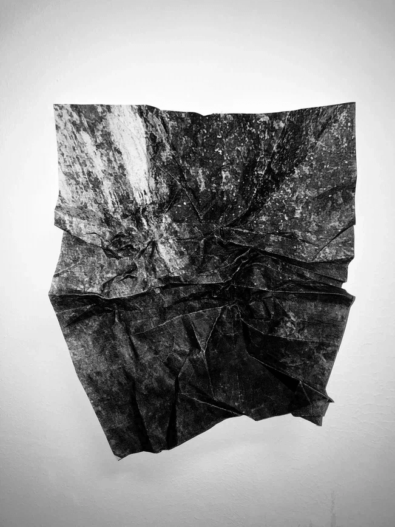
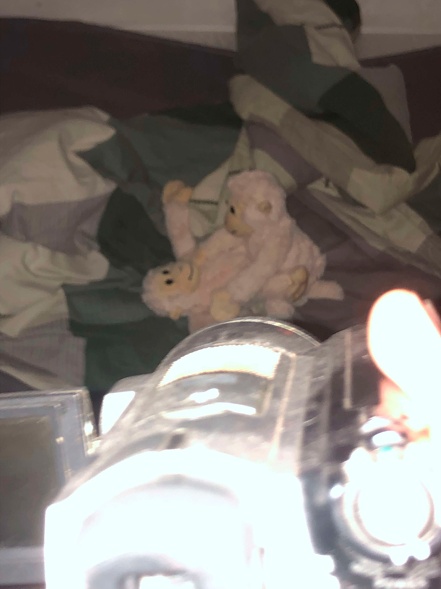
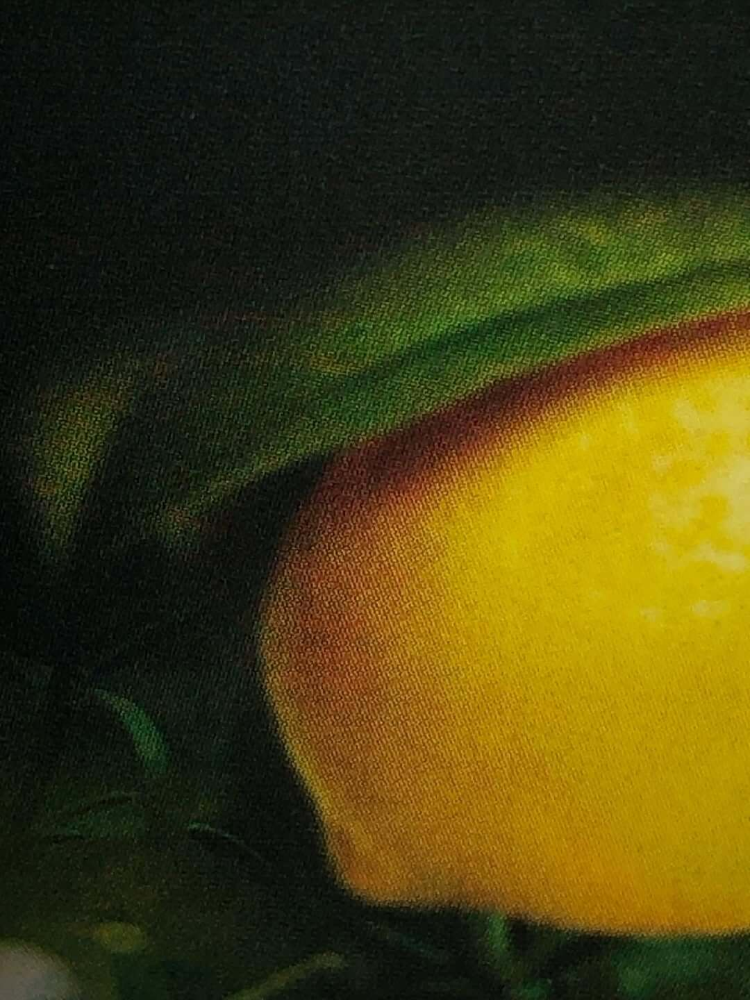
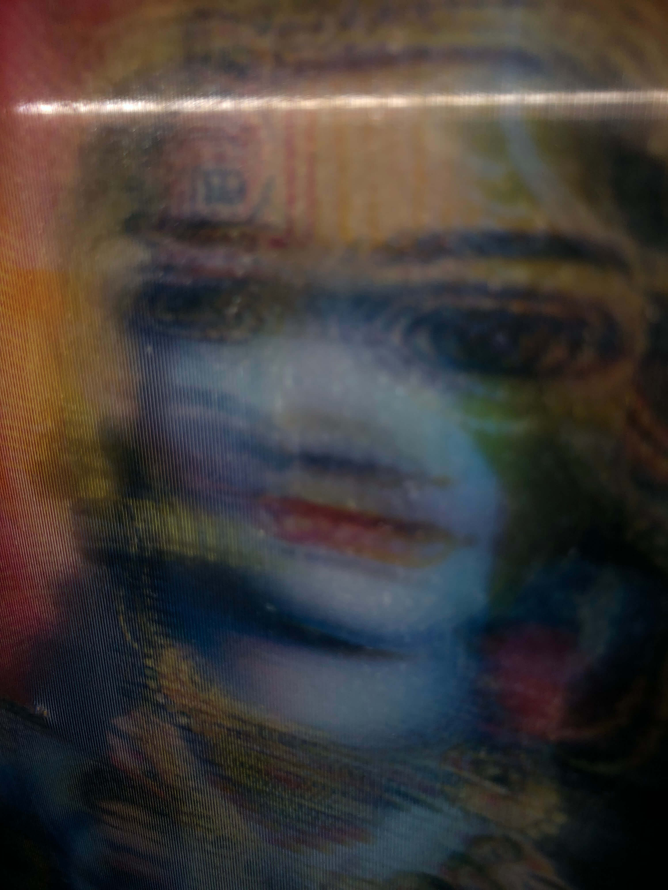
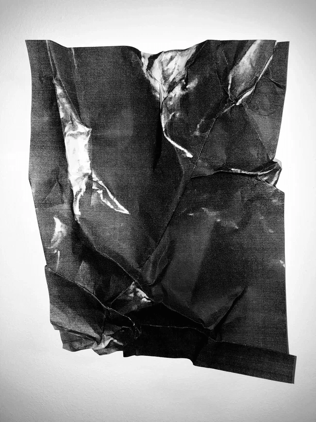
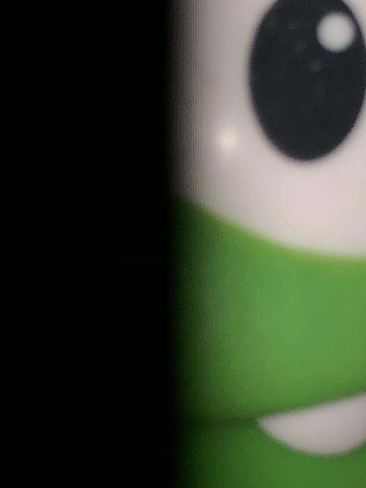
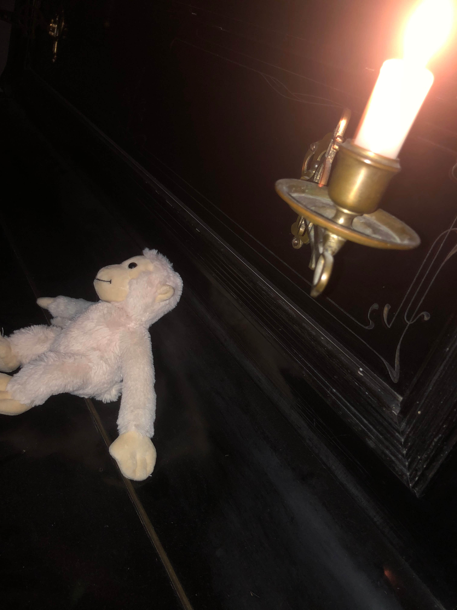
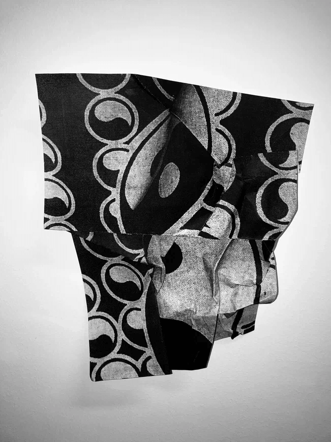

META-ORIGAMI
I like the idea of life as an ultimate experiment, the most exciting and terrifying one. We are entering the era of the sharing economy and total automation without any instructions. Schools avoided these issues, and parents had no chance to prepare us for the dating grinder; they barely learned how to manage their own relative freedom, leading us toward the most absurd threats to our physical existence.
This legitimately emerging fear of death pushes us either toward an obsessive search for information that can solve our problems or toward an extreme degree of digital escapism. We rush between these states with ever-increasing intensity until our brains begin to rot in the delirium of information intoxication. And the most amazing thing about this state is that everything still remains in its place. Your parents still miss you, your friends are waiting for the opportunity to help you, and something inside you still wants to love, to be loved, to express itself, and to contemplate other beings.
The delirium of information intoxication is the basis of my creative method. It allows me not to initiate a dialogue about problems and solutions but rather to help those who wish to rise above this false dichotomy by manifesting the serene laws of the universe through contemporary media and modern language. To do this, I use objects from history and everyday life in symbolic ways, along with intentionally paradoxical color and spatial combinations.
Color is the most basic manifestation of the wave nature of the universe. Looking around, you can easily see that it is mutually conditioned by form. Form, in turn, determines the function of an object. The interplay of functions creates music that gives us stories, meanings, tensions, resolutions, and all the other content of our lives.
The transition of music (in the broadest sense) into art occurs at the moment when any element — graphics, form, sound, space, or even thought itself — stabilizes. As soon as something is defined, it moves toward its physical (thermal) death, toward its ideal state. This is what attracts us to art: the ideality that conceals the profound mystery of death, which deserves our deepest interest.
I strive to capture states beyond reality, approaching it from the other side, bending the folds of matter into patterns that cannot help but obey their own laws. These are laws that stand above our daily experience and before which our brains obediently surrender their authority, revealing something infinite.
Мне нравится идея жизни как предельного эксперимента — самого волнительного и ужасающего. Мы входим в эпоху шеринг-экономики и тотальной автоматизации, не имея инструкций. Школа обходила эти вопросы стороной, родители не имели шанса подготовить нас к дейтинг-мясорубке, и сами едва научились распоряжаться относительной свободой, подводя нас к самым абсурдным угрозам физического существования.
Возникающий и вполне легитимный страх смерти толкает нас либо к одержимому поиску информации, способной решить наши проблемы, либо к крайней степени цифрового эскапизма. Мы мечемся между этими состояниями со всё более возрастающей амплитудой до тех пор, пока наш мозг не начнёт гнить в делирии информационной интоксикации. И самое удивительное в этом состоянии – обнаружить всё на своих местах. Родители всё также скучают по тебе, друзья ждут возможности протянуть тебе руку помощи, что-то внутри тебя всё также хочет любить, быть любимым, проявлять себя и созерцать других существ.
Делирий информационной интоксикации – основа моего творческого метода. Он позволяет не столько начать диалог о проблемах и решениях, сколько помочь желающим возвыситься над этой ложной дихотомией, проявив безмятежные законы мироздания в актуальных медиа на языке современного человека. Для этого я использую объекты истории и повседневности в символическом значении и нарочито парадоксальных цветовых и пространственных комбинациях.
Цвет - базовое проявление волновой природы вселенной. Оглянувшись вокруг, можно легко убедиться, что он взаимно обусловлен формой. Форма взаимно обуславливает функцию объекта. Взаимодействие функций рождает музыку, которая даёт нам истории, смыслы, напряжения, разрешения, и все прочие наполнения нашей жизни.
Переход музыки (в широком смысле) к искусству происходит в момент стабилизации какого-либо элемента: графики, формы, звука, пространства или даже самой мысли. Как только нечто определяется, оно приходит к своей физической (тепловой) смерти, к своему идеалу. Это то, что притягивает нас в искусстве, идеальность, за которой скрывается величайшая тайна смерти, заслуживающая величайшего интереса.
Я стремлюсь запечатлеть состояния вне реальности, обходя её с другой стороны, выгибая складки материи в узоры, которые не могут не подчиниться своим законам, стоящим выше нашего повседневного опыта, и перед которыми наш мозг также покорно складывает свои полномочия, освобождая нечто бесконечное.